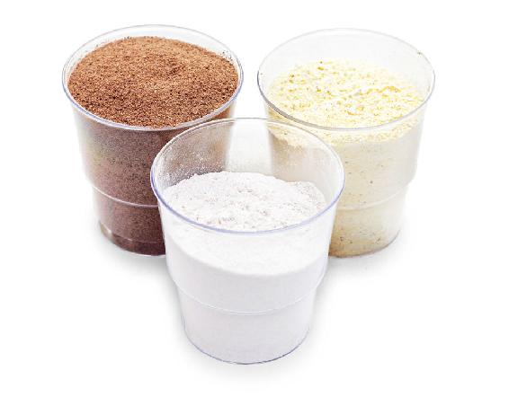
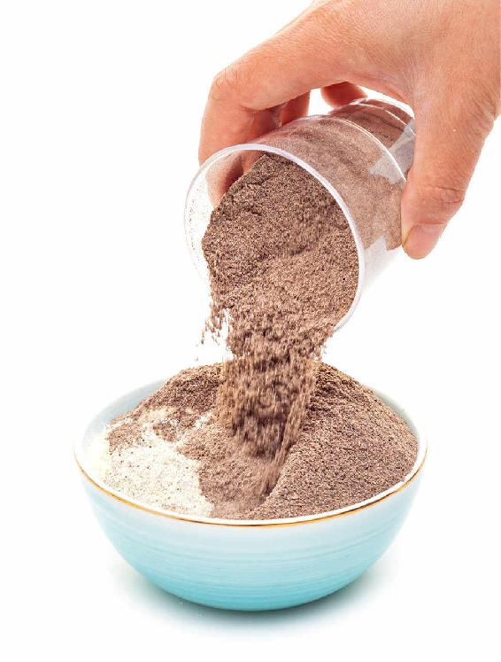
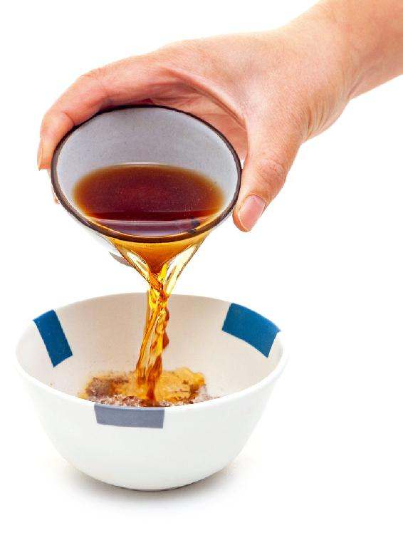
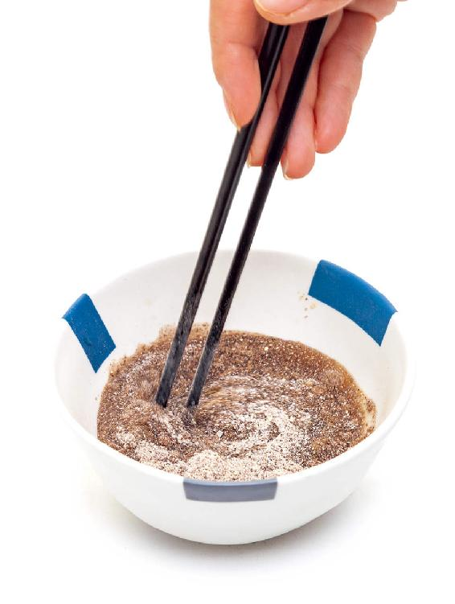
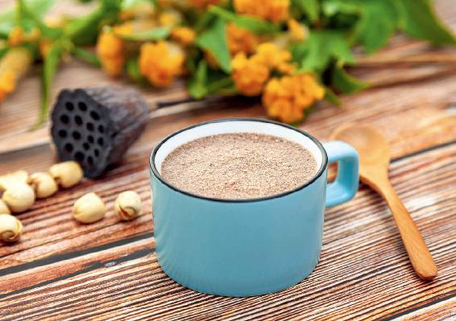

农历七月初七，牛郎、织女双星相会，这就是七夕节。
宋代词人秦观有一首《鹊桥仙》写道：
“纤云弄巧，飞星传恨，银汉迢迢暗度。金风玉露一相逢，便胜却、人间无数。
柔情似水，佳期如梦，忍顾鹊桥归路。两情若是久长时，又岂在、朝朝暮暮。”
这里“金风”便是秋风，因为秋季在五行中属金；“玉露”便是秋露，因为秋季的主色是白色。
金风玉露一相逢，七夕节就来了，它是迎接秋天的节日。
传说牛郎织女是在鹊桥上相会。为什么是喜鹊来搭桥呢？因为古人认为喜鹊是做媒之鸟，而且喜鹊在七月时头会变秃，民间就说是因为搭鹊桥给牛郎织女行走而秃的。其实，这是喜鹊在换羽毛。
动物到秋天就开始换毛。因为夏天这身毛是硬毛，不保暖。秋天长的是绒毛，很细，比较保暖。成语“明察秋毫”，“秋毫”就是指鸟兽秋天换上的绒毛，非常细微。
人也是一样。人全身的毛发，就数头发最多，所以人的毛发变化以头发最明显。春夏头发生长旺盛，到了秋天生长就慢了，还容易脱落。秋天养发的重点就是防止脱发。
七月初七这一天，古代女子会采柏树的叶子煮水来洗头发，因为侧柏叶有生发、乌发的作用。
七夕是女儿节，与《黄帝内经》中的“女七男八”理论有关系。
中医认为，男性的生命周期以8年为一个阶段，女性以7年为一个阶段。七月七日，两个7相逢，这就是女性的节日。
七夕节的民俗，都与女性相关。女性在这一天有好多事情要做，要乞巧、拜月、洗发、养颜。
这些传统民俗，对女性的身体和容颜也都有好处。
七夕时，女子要拜月。
古人认为月亮是“太阴”，对女性的影响比较大，例如女性的月事就会受到月亮的影响。
春夏养阳，秋冬养阴。女性是特别需要养阴的。如果养阴没有养好，一生的健康和容颜都会受影响。
荷花、莲子、莲藕，是七夕节拜月的供品和食材，它们都对女性养颜有帮助，常吃有驻颜的作用。
七月初七这一天，古代女性采摘新鲜的莲花，制作一种驻颜的食方。
这个食方只有三样原料，用的都是荷塘里的宝贝：莲花、莲子和莲藕。
制作方法却有点讲究——
采摘农历七月初七的莲花、八月初八的莲藕、九月初九的莲子，晒干磨成粉。
这个方子可以让皮肤的血色更好。
古人对采摘的时间要求这么精准，这里面有古代的一些讲究。
比如说，七月初的莲花比较鲜香，八月的莲藕更肥美，而九月的莲子，其实是比较难得了。
如果您有这个雅兴来效仿古人，做不到按时采摘，也可以用一个简单的法子来制作——
莲花驻颜粉

原料：70克莲花粉、80克藕粉、90克莲子粉。

做法：
1.莲藕自己做粉比较难，可以去市场买一包藕粉。将新鲜莲花晒干（或去药房买干莲花）打粉，莲子打粉，一起混合均匀。


2.每次取一勺，用一小盅酒调化，温热后食用。

七夕拜过月之后，就是“乞巧”——古代女子向织女乞求心灵手巧。乞巧时，会供奉巧果。
巧果是各种形状的面点，用线穿成串，挂起来，好吃又好看。还要供奉秋天收获的果实，一般包含红枣、花生、桂圆、松子、香瓜，它们合起来就是“早生贵子，瓜瓞绵延”，寓意家族繁荣昌盛，多子多孙。
这些果实可不是随便选的。
红枣补气，桂圆补心血……大家都知道对女性特别好。
花生既补水又补血。在七夕节时，可以用花生搭配红小豆、绿豆、粥米，煮一碗“相思长生粥”。我这个粥方的名字，其中一个来源就是花生的别名“长生果”。
关于花生的功效和不一样的吃法，在后面的“相思长生粥”篇还会具体讲到。
松子和甜瓜有什么作用呢？
在所有的坚果中，古人认为松子最高级。
唐代药王孙思邈认为：农历七月初七采的松子，功效最好。坚持吃三百天，就可以身轻体健、延年益寿。吃松子不用太担心发胖，因为它虽然含油脂丰富，但也补精气，有利于新陈代谢。
秋不食瓜，这个瓜是指西瓜，甜瓜则是可以吃的。
七月又称为“瓜月”。现在有些地方七夕节供奉西瓜，其实“瓜月”的瓜是指甜瓜，也就是香瓜。
诗经有云：“七月食瓜，八月断壶”，意思就是：七月吃甜瓜，八月摘葫芦。
甜瓜跟其他的瓜不一样，可以连瓤带籽一起吃，对调理咳喘有帮助，能够预防支气管炎。